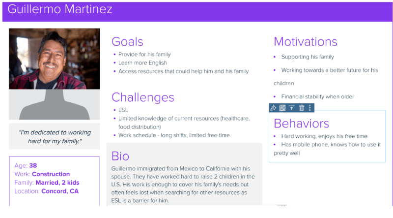

To inform my design, I conducted a competitor analysis of two nonprofits that currently serve the area and population demographic I am making this website mockup for: Monument Crisis Center and Monument Impact.
I examined their websites’ layouts, navigation, content organization, and accessibility to identify strengths, weaknesses, and opportunities for improvement. Insights from this analysis helped guide decisions about structure, functionality, and user experience in my own design.

Analyzing Monument Crisis Center’s website revealed potential pain points common to nonprofit sites. The landing page is crowded with text and information, which can overwhelm visitors, and the unclear hierarchy and page layout create friction during navigation. Identifying these challenges helped me understand where improvements could be made to create a clearer, more user-friendly experience in my own design.

Monument Impact’s website showed improvements in clarity, hierarchy, and layout compared to other nonprofit sites. However, there were still opportunities to enhance the user experience, particularly with CTA buttons, section organization, and overall flow.
To better understand the audience this nonprofit—and others with similar missions—could serve, I started by looking at demographic and behavioral data from the target region.

From this information, I created user personas that reflected the community’s common barriers, device/media usage, and everyday needs. This helped me shape design decisions around what would be most useful and accessible for them.

Based on the data I collected, I created three user personas that represent potential visitors to the nonprofit’s site. Each persona highlights different goals, challenges, and motivations, ranging from seeking general information to accessing specific resources. These personas helped me keep the design focused on real user needs and ensured that features and content would support a diverse set of visitors.

